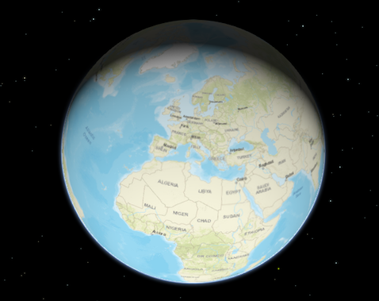

View
esri/views/ViewA view provides the means of viewing and interacting with the components of a Map. The Map is merely a container, storing the geographic information contained in base layers and operational layers. The View renders the Map and its various layers, making them visible to the user.
There are two types of views: MapView and SceneView. The MapView renders a Map and its layers in 2D. The SceneView renders these elements in 3D. View is the base class of MapView and SceneView and has no constructor. To create a view, you must do so by directly creating an instance of either MapView or SceneView.
| MapView (2D) | SceneView (3D) |
|---|---|
 |  |
To associate a view with a map, you must set the map property to an instance of Map.
// Load the Map and MapView modules
require(["esri/Map", "esri/views/MapView", "dojo/domReady!"], function(Map, MapView) {
// Create a Map instance
var map = new Map({
basemap: "streets"
});
// Create a MapView instance (for 2D viewing) and set its map property to
// the map instance we just created
var view = new MapView({
map: map,
container: "viewDiv"
});
});
In the snippet above, you'll notice a container property set on the view. The container property is the reference to the DOM node that contains the view. This is commonly a <div> element. The container referenced in the example above might look something like:
<body>
<div id="viewDiv"></div>
</body>
You can observe the view's relationship to the HTML container in the Create a 2D map tutorial and any of the available samples.
Other properties may be set on the view, such as the rotation, scale, popup, and padding. See MapView and SceneView for additional properties specific to creating views in 2D and 3D.
A Map may have multiple views associated with it, including a combination of MapViews and SceneViews. See the Geodesic buffers and 2D overview map in SceneView samples to learn how a MapView and a SceneView can display the same map in a single application. While multiple views can reference the same map, a view may not associate itself with more than one Map instance.
The View also allows users to interact with components of the map. For example, when a user clicks or touches the location of a feature in a map, they are not touching the feature nor the map; the event is actually handled with the View that references the map and the LayerView that references the layer. Therefore, events such as click are not handled on the Map or the Layer, but rather on the View. See MapView and SceneView for additional details.
Property Overview
| Name | Type | Summary | Class | |
|---|---|---|---|---|
| Collection<LayerView> | Collection containing a flat list of all the created LayerViews related to the basemap, operational layers, and group layers in this view. more details | more details | View | |
| ViewAnimation | Represents an ongoing view animation initialized by goTo(). more details | more details | View | |
| HTMLDivElement | The | more details | View | |
| String | The name of the class. more details | more details | Accessor | |
| Boolean | Indicates if the browser focus is on the view. more details | more details | View | |
| Collection<Graphic> | Allows for adding graphics directly to the default graphics in the View. more details | more details | View | |
| GroundView | The view for the ground of the map. more details | more details | View | |
| Number | The height of the view in pixels read from the view container element. more details | more details | View | |
| Input | Options to configure input handling of the View. more details | more details | View | |
| Boolean | Indication whether the view is being interacted with (for example when panning). more details | more details | View | |
| Collection<LayerView> | A collection containing a hierarchical list of all the created LayerViews of the operational layers in the map. more details | more details | View | |
| Map | An instance of a Map object to display in the view. more details | more details | View | |
| Navigation | Options to configure the navigation behavior of the View. more details | more details | View | |
| Object | Use the padding property to make the center, and extent, etc. more details | more details | View | |
| Popup | A Popup object that displays general content or attributes from layers in the map. more details | more details | View | |
| Boolean | When | more details | View | |
| Boolean | Indicates if the view is being resized. more details | more details | View | |
| Number | Represents the current value of one pixel in the unit of the view's spatialReference. more details | more details | View | |
| Number[] | An array containing the width and height of the view in pixels, e.g. more details | more details | View | |
| SpatialReference | The spatial reference of the view. more details | more details | View | |
| Boolean | Indication whether the view is animating, being interacted with or resizing. more details | more details | View | |
| Boolean | Indicates if the view is visible on the page. more details | more details | View | |
| String | The type of the view is either | more details | View | |
| DefaultUI | Exposes the default widgets available in the view and allows you to toggle them on and off. more details | more details | View | |
| Boolean | Indicates whether the view is being updated by additional data requests to the network, or by processing received data. more details | more details | View | |
| Number | The width of the view in pixels read from the view container element. more details | more details | View |
Property Details
- allLayerViewsCollection<LayerView>
Collection containing a flat list of all the created LayerViews related to the basemap, operational layers, and group layers in this view.
- See also:
- animationViewAnimation
Represents an ongoing view animation initialized by goTo(). You may watch this property to be notified when the view's extent changes .
- See also:
- containerHTMLDivElementautocastAutocasts from String
The
idor node representing the DOM element containing the view. This is typically set in the view's constructor.Examples:// Sets container to the DOM id var view = new MapView({ container: "viewDiv" // ID of the HTML element that holds the view });// Sets container to the node var viewNode = document.getElementById("viewDiv"); var view = new SceneView({ container: viewNode });
- Since: ArcGIS API for JavaScript 4.7
The name of the class. The declared class name is formatted as
esri.folder.className.
- focusedBooleanreadonlySince: ArcGIS API for JavaScript 4.7
Indicates if the browser focus is on the view.
- graphicsCollection<Graphic>
Allows for adding graphics directly to the default graphics in the View.
Examples:// Adds a graphic to the View view.graphics.add(pointGraphic);// Removes a graphic from the View view.graphics.remove(pointGraphic);
- groundViewGroundViewreadonlySince: ArcGIS API for JavaScript 4.7
The view for the ground of the map.
- heightNumberreadonly
The height of the view in pixels read from the view container element.
The view container needs to have a height greater than 0 to be displayed.
- Default Value:0
- inputInputreadonlySince: ArcGIS API for JavaScript 4.9
Options to configure input handling of the View.
Example:// Make gamepad events to emit independently of focus. view.input.gamepad.enabledFocusMode = "none";
- interactingBooleanreadonly
Indication whether the view is being interacted with (for example when panning).
- Default Value:false
- layerViewsCollection<LayerView>
A collection containing a hierarchical list of all the created LayerViews of the operational layers in the map.
- See also:
- mapMap
An instance of a Map object to display in the view. A view may only display one map at a time. On the other hand, one Map may be viewed by multiple MapViews and/or SceneViews simultaneously.
This property is typically set in the constructor of the MapView or SceneView. See the class description for examples demonstrating the relationship between the map and the view.
- Since: ArcGIS API for JavaScript 4.9
Options to configure the navigation behavior of the View.
Example://disable gamepad navigation view.navigation.gamepad.enabled = false;
- paddingObject
Use the padding property to make the center, and extent, etc. work off a subsection of the full view. This is particularly useful when layering UI elements or semi-transparent content on top of portions of the view. See the view padding sample for an example of how this works.
- popupautocast
A Popup object that displays general content or attributes from layers in the map.
The view has a default instance of Popup with predefined styles and a template for defining content. The content in this default instance may be modified directly in the popup's content or in a layer's PopupTemplate.
You may create a new Popup instance and set it to this property to customize the style, positioning, and content of the popup in favor of using the default popup instance on the view.
In addition, if wanting to prevent any popups from opening, use the syntax below:
Example:view.popup = null;
- readyBooleanreadonly
When
true, this property indicates whether the view successfully satisfied all dependencies, signaling that the following conditions are met.- The view has a map. If map is a WebMap or a WebScene, then the map or scene must be loaded.
- The view has a container with a size greater than
0. - The view has a spatialReference.
When a view becomes ready it will resolve itself and invoke the callback defined in when() where code can execute on a working view. Subsequent changes to a view's readiness would typically be handled by watching
view.readyand providing logic for cases where the map or container change.- Default Value:false
- See also:
- resizingBooleanreadonly
Indicates if the view is being resized.
- Default Value:false
- resolutionNumberreadonlySince: ArcGIS API for JavaScript 4.9
Represents the current value of one pixel in the unit of the view's spatialReference. The value of resolution is calculated by dividing the view's extent width by its width.
- sizeNumber[]readonly
An array containing the width and height of the view in pixels, e.g.
[width, height].
- spatialReferenceSpatialReferenceautocast
The spatial reference of the view. This indicates the Projected Coordinate System or the Geographic Coordinate System used to locate geographic features in the map. In a SceneView the following supported coordinate systems are available.
The spatial reference can either be set explicitly or automatically derived from the following:
- In the case of a SceneView, if the map is a WebScene instance, the WebScene.initialViewProperties.spatialReference is used.
- In all other cases, the spatial reference is derived from the first layer that loads in this order:
When using an Esri basemap, the default spatial reference is Web Mercator Auxiliary Sphere.
- Default Value:null
- stationaryBooleanreadonly
Indication whether the view is animating, being interacted with or resizing.
- Default Value:true
- suspendedBooleanreadonly
Indicates if the view is visible on the page. Is
trueif the view has no container, a height or width equal to 0, or the CSSvisibilityishidden.- Default Value:true
- typeStringreadonly
Exposes the default widgets available in the view and allows you to toggle them on and off. See DefaultUI for more details.
Examples:var toggle = new BasemapToggle({ view: view, nextBasemap: "hybrid" }); // Adds an instance of BasemapToggle widget to the // top right of the view. view.ui.add(toggle, "top-right");// Moves the zoom and BasemapToggle widgets to the // bottom left of the view. view.ui.move([ "zoom", toggle ], "bottom-left");// Removes all the widgets from the bottom left of the view view.ui.empty("bottom-left");// Removes the compass widget from the view view.ui.remove("compass");
- updatingBooleanreadonly
Indicates whether the view is being updated by additional data requests to the network, or by processing received data.
- Default Value:false
- widthNumberreadonly
The width of the view in pixels read from the view container element.
The view container needs to have a width greater than 0 to be displayed.
- Default Value:0
Method Overview
| Name | Return Type | Summary | Class | |
|---|---|---|---|---|
Sets the focus on the view. more details | more details | View | ||
| Boolean | Indicates whether there is an event listener on the instance that matches the provided event name. more details | more details | View | |
| Boolean |
| more details | View | |
| Boolean |
| more details | View | |
| Boolean |
| more details | View | |
| Object | Registers an event handler on the instance. more details | more details | View | |
| Promise |
| more details | View | |
| Promise<LayerView> | Gets the LayerView created on the view for the given layer. more details | more details | View |
Method Details
- focus()Since: ArcGIS API for JavaScript 4.5
Sets the focus on the view.
- hasEventListener(type){Boolean}
Indicates whether there is an event listener on the instance that matches the provided event name.
Parameter:type StringThe name of the event.
Returns:Type Description Boolean Returns true if the class supports the input event.
- isFulfilled(){Boolean}
isFulfilled()may be used to verify if creating an instance of the class is fulfilled (either resolved or rejected). If it is fulfilled,truewill be returned.Returns:Type Description Boolean Indicates whether creating an instance of the class has been fulfilled (either resolved or rejected).
- isRejected(){Boolean}
isRejected()may be used to verify if creating an instance of the class is rejected. If it is rejected,truewill be returned.Returns:Type Description Boolean Indicates whether creating an instance of the class has been rejected.
- isResolved(){Boolean}
isResolved()may be used to verify if creating an instance of the class is resolved. If it is resolved,truewill be returned.Returns:Type Description Boolean Indicates whether creating an instance of the class has been resolved.
- on(type, modifiersOrHandler, handler){Object}
Registers an event handler on the instance. Call this method to hook an event with a listener. See the Events summary table for a list of listened events.
Parameters:The name of the event or events to listen for.
Additional modifier keys to filter events. Please see Key Values for possible values. All the standard key values are supported. Alternatively, if no modifiers are required, the function will call when the event fires.
The following events don't support modifier keys:
blur,focus,layerview-create,layerview-destroy,resize.handler FunctionoptionalThe function to call when the event is fired, if modifiers were specified.
Returns:Type Description Object Returns an event handler with a remove()method that can be called to stop listening for the event.Property Type Description remove Function When called, removes the listener from the event. - See also:
Example:view.on("click", function(event){ // event is the event handle returned after the event fires. console.log(event.mapPoint); }); // Fires `pointer-move` event when user clicks on "Shift" // key and moves the pointer on the view. view.on('pointer-move', ["Shift"], function(evt){ var point = view2d.toMap({x: evt.x, y: evt.y}); bufferPoint(point); });
- when(callback, errback){Promise}Since: ArcGIS API for JavaScript 4.6
when()may be leveraged once an instance of the class is created. This method takes two input parameters: acallbackfunction and anerrbackfunction. Thecallbackexecutes when the instance of the class loads. Theerrbackexecutes if the instance of the class fails to load.Parameters:callback FunctionoptionalThe function to call when the promise resolves.
errback FunctionoptionalThe function to execute when the promise fails.
Returns:Type Description Promise Returns a new promise for the result of callbackthat may be used to chain additional functions.Example:// Although this example uses MapView, any class instance that is a promise may use then() in the same way var view = new MapView(); view.when(function(){ // This function will execute once the promise is resolved }, function(error){ // This function will execute if the promise is rejected due to an error });
Gets the LayerView created on the view for the given layer. The returned promise resolves when the layer view for the given layer has been created, or rejects with an error (for example if the layer is not part of the view, or if the layer type is not supported in this view).
Parameter:layer LayerThe layer for which to obtain its LayerView.
Returns:Type Description Promise<LayerView> Resolves to an instance of LayerView for the specified layer. - See also:
Example:// Create a feature layer from a url pointing to a Feature Service var layer = new FeatureLayer(url); map.add(layer); view.whenLayerView(layer) .then(function(layerView) { // The layerview for the layer }) .catch(function(error) { // An error occurred during the layerview creation });
Event Overview
| Name | Type | Summary | Class | |
|---|---|---|---|---|
{target: View,native: Object} | Fires when browser focus is moved away from the view. more details | more details | View | |
{mapPoint: Point,x: Number,y: Number,button: Number,buttons: Number,type: String,stopPropagation: Function,timestamp: Number,native: Object} | Fires after a user clicks on the view. more details | more details | View | |
{mapPoint: Point,x: Number,y: Number,button: Number,buttons: Number,type: String,stopPropagation: Function,timestamp: Number,native: Object} | Fires after double-clicking on the view. more details | more details | View | |
{action: String,x: Number,y: Number,origin: Object,button: Number,buttons: Number,type: String,radius: Number,angle: Number,stopPropagation: Function,timestamp: Number,native: Object} | Fires during a pointer drag on the view. more details | more details | View | |
{target: View,native: Object} | Fires when browser focus is on the view. more details | more details | View | |
{mapPoint: Point,x: Number,y: Number,button: Number,buttons: Number,type: String,stopPropagation: Function,timestamp: Number,native: Object} | Fires after holding either a mouse button or a single finger on the view for a short amount of time. more details | more details | View | |
{mapPoint: Point,x: Number,y: Number,button: Number,buttons: Number,type: String,stopPropagation: Function,timestamp: Number,native: Object} | Fires right after a user clicks on the view. more details | more details | View | |
{repeat: Boolean,key: String,type: String,stopPropagation: Function,timestamp: Number,native: Object} | Fires after a keyboard key is pressed. more details | more details | View | |
{type: String,stopPropagation: Function,timestamp: Number,native: Object} | Fires after a keyboard key is released. more details | more details | View | |
{layer: Layer,layerView: LayerView} | Fires after each layer in the map has a corresponding LayerView created and rendered in the view. more details | more details | View | |
{layer: Layer,layerView: LayerView} | Fires after a LayerView is destroyed and is no longer rendered in the view. more details | more details | View | |
{x: Number,y: Number,deltaY: Number,type: String,stopPropagation: Function,timestamp: Number,native: Object} | Fires when a wheel button of a pointing device (typically a mouse) is scrolled on the view. more details | more details | View | |
{pointerId: Number,pointerType: String,x: Number,y: Number,button: Number,buttons: Number,type: String,stopPropagation: Function,timestamp: Number,native: Object} | Fires after a mouse button is pressed, or a finger touches the display. more details | more details | View | |
{pointerId: Number,pointerType: String,x: Number,y: Number,button: Number,buttons: Number,type: String,stopPropagation: Function,timestamp: Number,native: Object} | Fires after a mouse cursor enters the view, or a display touch begins. more details | more details | View | |
{pointerId: Number,pointerType: String,x: Number,y: Number,button: Number,buttons: Number,type: String,stopPropagation: Function,timestamp: Number,native: Object} | Fires after a mouse cursor leaves the view, or a display touch ends. more details | more details | View | |
{pointerId: Number,pointerType: String,x: Number,y: Number,button: Number,buttons: Number,type: String,stopPropagation: Function,timestamp: Number,native: Object} | Fires after the mouse or a finger on the display moves. more details | more details | View | |
{pointerId: Number,pointerType: String,x: Number,y: Number,button: Number,buttons: Number,type: String,stopPropagation: Function,timestamp: Number,native: Object} | Fires after a mouse button is released, or a display touch ends. more details | more details | View | |
{oldWidth: Number,oldHeight: Number,width: Number,height: Number} | Fires when the view's size changes. more details | more details | View |
Event Details
- blurSince: ArcGIS API for JavaScript 4.7
Fires when browser focus is moved away from the view.
- Properties:
- target View
The view that the browser focus is moved away from.
native ObjectA standard DOM KeyboardEvent.
- click
Fires after a user clicks on the view. This event emits slightly slower than a pointer-down event to make sure that a double-click event isn't triggered instead. The immediate-click event can be used for responding to a click event without delay.
- Properties:
- mapPoint Point
The point location of the click on the view in the spatial reference of the map.
x NumberThe horizontal screen coordinate of the click on the view.
y NumberThe vertical screen coordinate of the click on the view.
button NumberIndicates which mouse button was clicked.
buttons NumberIndicates the current mouse button state.
Value Description 0 left click (or touch) 1 middle click 2 right click type StringFor click the type is always
click.stopPropagation FunctionPrevents event propagation bubbling up the event chain.
By default the
clickevent will close the view's popup if the clicked location doesn't intersect a feature containing a PopupTemplate. If calling view.popup.open() to display custom content in the popup, you should callevent.stopPropagation()on theclickevent object to disable this default behavior. This ensures the popup will remain open or open with new custom content when the user clicks other locations in the view.timestamp NumberTime stamp (in milliseconds) at which the event was emitted.
native ObjectA standard DOM PointerEvent.
- See also:
Examples:// Set up a click event handler and retrieve the screen point view.on("click", function(event) { // the hitTest() checks to see if any graphics in the view // intersect the given screen x, y coordinates view.hitTest(event) .then(getGraphics); });view.on("click", function(event) { // you must overwrite default click-for-popup // behavior to display your own popup event.stopPropagation(); // Get the coordinates of the click on the view var lat = Math.round(event.mapPoint.latitude * 1000) / 1000; var lon = Math.round(event.mapPoint.longitude * 1000) / 1000; view.popup.open({ // Set the popup's title to the coordinates of the location title: "Reverse geocode: [" + lon + ", " + lat + "]", location: event.mapPoint // Set the location of the popup to the clicked location content: "This is a point of interest" // content displayed in the popup }); });
- double-click
Fires after double-clicking on the view.
- Properties:
- mapPoint Point
The point location of the click on the view in the spatial reference of the map.
x NumberThe horizontal screen coordinate of the click on the view.
y NumberThe vertical screen coordinate of the click on the view.
button NumberIndicates which mouse button was clicked.
buttons NumberIndicates the current mouse button state.
Value Description 0 left click (or touch) 1 middle click 2 right click type StringFor double-click the type is always
double-click.stopPropagation FunctionPrevents event propagation bubbling up the event chain.
timestamp NumberTime stamp (in milliseconds) at which the event was emitted.
native ObjectA standard DOM PointerEvent.
Example:view.on("double-click", function(event) { // The event object contains the mapPoint and the screen coordinates of the location // that was clicked. console.log("screen point", event.x, event.y); console.log("map point", event.mapPoint); });
- drag
Fires during a pointer drag on the view.
- Properties:
- action String
Indicates the state of the drag. The two values
addedandremovedindicate a change in the number of pointers involved.Possible Values: start | added | update | removed | end
x NumberThe horizontal screen coordinate of the pointer on the view.
y NumberThe vertical screen coordinate of the pointer on the view.
origin ObjectScreen coordinates of the start of the drag.
button NumberIndicates which mouse button was clicked at the start of the drag. See MouseEvent.button.
Value Description 0 left mouse button (or touch) 1 middle mouse button 2 right mouse button buttons NumberIndicates which mouse buttons are pressed when the event is triggered. See MouseEvent.buttons.
type StringFor drag the type is always
drag.radius NumberThe radius of a sphere around the multiple pointers involved in this drag. Or 0 while only a single pointer is used.
angle NumberAmount of rotation (in degrees) since the last event of type
start.stopPropagation FunctionPrevents event propagation bubbling up the event chain.
timestamp NumberTime stamp (in milliseconds) at which the event was emitted.
native ObjectA standard DOM MouseEvent.
Example:view.on("drag", function(evt){ // Print out the current state of the // drag event. console.log("drag state", evt.action); });
- focusSince: ArcGIS API for JavaScript 4.7
Fires when browser focus is on the view.
- Properties:
- target View
The view that the browser focus is currently on.
native ObjectA standard DOM KeyboardEvent.
- hold
Fires after holding either a mouse button or a single finger on the view for a short amount of time.
- Properties:
- mapPoint Point
The point location of the click on the view in the spatial reference of the map.
x NumberThe horizontal screen coordinate of the hold on the view.
y NumberThe vertical screen coordinate of the hold on the view.
button NumberIndicates which mouse button was held down. See MouseEvent.button.
Value Description 0 left mouse button (or touch) 1 middle mouse button 2 right mouse button buttons NumberIndicates which mouse buttons are pressed when the event is triggered. See MouseEvent.buttons.
type StringFor hold the type is always
hold.stopPropagation FunctionPrevents event propagation bubbling up the event chain.
timestamp NumberTime stamp (in milliseconds) at which the event was emitted.
native ObjectA standard DOM PointerEvent.
Example:view.on("hold", function(event) { // The event object contains the mapPoint and the screen coordinates of the location // that was clicked. console.log("hold at screen point", event.x, event.y); console.log("hold at map point", event.mapPoint); });
- immediate-clickSince: ArcGIS API for JavaScript 4.7
Fires right after a user clicks on the view. In contrast to the click event, the immediate-click event is emitted as soon as the user clicks on the view, and is not inhibited by a double-click event. This event is useful for interactive experiences that require feedback without delay.
- Properties:
- mapPoint Point
The point location of the click on the view in the spatial reference of the map.
x NumberThe horizontal screen coordinate of the click on the view.
y NumberThe vertical screen coordinate of the click on the view.
button NumberIndicates which mouse button was clicked. See MouseEvent.button.
Value Description 0 left click (or touch) 1 middle click 2 right click buttons NumberIndicates which buttons are pressed when the event is triggered. See MouseEvent.buttons.
type StringFor click the type is always
immediate-click.stopPropagation FunctionPrevents event propagation bubbling up the event chain.
timestamp NumberTime stamp (in milliseconds) at which the event was emitted.
native ObjectA standard DOM PointerEvent.
Example:// Set up an immediate-click event handler and retrieve the screen point view.on("immediate-click", function(event) { // the hitTest() checks to see if any graphics in the view // intersect the given screen x, y coordinates view.hitTest(event) .then(getGraphics); });
- key-down
Fires after a keyboard key is pressed.
- Properties:
- repeat Boolean
Indicates whether this is the first event emitted due to the key press, or a repeat.
key StringThe key value that was pressed, according to the MDN full list of key values.
type StringFor key-down the type is always
key-down.stopPropagation FunctionPrevents event propagation bubbling up the event chain.
timestamp NumberTime stamp (in milliseconds) at which the event was emitted.
native ObjectA standard DOM KeyboardEvent.
Example:// Zoom in when user clicks on "a" button // Zoom out when user clicks on "s" button view.on("key-down", function(evt){ console.log("key-down", evt); if (evt.key === "a"){ var zm = view.zoom + 1; view.goTo({ target: view.center, zoom: zm }); } else if(evt.key == "s"){ var zm = view.zoom - 1; view.goTo({ target: view.center, zoom: zm }); } });
- key-up
Fires after a keyboard key is released.
- Properties:
- type String
For key-up the type is always
key-up.stopPropagation FunctionPrevents event propagation bubbling up the event chain.
timestamp NumberTime stamp (in milliseconds) at which the event was emitted.
native ObjectA standard DOM KeyboardEvent.
- layerview-create
Fires after each layer in the map has a corresponding LayerView created and rendered in the view.
- Properties:
- layer Layer
The layer in the map for which the
layerViewwas created.layerView LayerViewThe LayerView rendered in the view representing the layer in
layer. - See also:
Example:// This function fires each time a layer view is created for a layer in // the map of the view. view.on("layerview-create", function(event) { // The event contains the layer and its layer view that has just been // created. Here we check for the creation of a layer view for a layer with // a specific id, and log the layer view if (event.layer.id === "satellite") { // The LayerView for the desired layer console.log(event.layerView); } });
- layerview-destroy
Fires after a LayerView is destroyed and is no longer rendered in the view. This happens for example when a layer is removed from the map of the view.
- mouse-wheel
Fires when a wheel button of a pointing device (typically a mouse) is scrolled on the view.
- Properties:
- x Number
The horizontal screen coordinate of the click on the view.
y NumberThe vertical screen coordinate of the click on the view.
deltaY NumberNumber representing the vertical scroll amount.
type StringFor mouse-wheel the type is always
mouse-wheel.stopPropagation FunctionPrevents event propagation bubbling up the event chain.
timestamp NumberTime stamp (in milliseconds) at which the event was emitted.
native ObjectA standard DOM WheelEvent.
Example:view.on("mouse-wheel", function(evt){ // deltaY value is postive when wheel is scrolled up // and it is negative when wheel is scrolled down. console.log(evt.deltaY); });
- pointer-down
Fires after a mouse button is pressed, or a finger touches the display.
- Properties:
- pointerId Number
Uniquely identifies a pointer between multiple down, move, and up events. Ids might get reused after a pointer-up event.
pointerType StringIndicates the pointer type.
Possible Values: mouse | touch
x NumberThe horizontal screen coordinate of the pointer on the view.
y NumberThe vertical screen coordinate of the pointer on the view.
button NumberIndicates which mouse button was clicked.
buttons NumberIndicates which mouse buttons are pressed when the event is triggered. See MouseEvent.buttons.
type StringFor pointer-down the type is always
pointer-down.stopPropagation FunctionPrevents event propagation bubbling up the event chain.
timestamp NumberTime stamp (in milliseconds) at which the event was emitted.
native ObjectA standard DOM PointerEvent.
- pointer-enter
Fires after a mouse cursor enters the view, or a display touch begins.
- Properties:
- pointerId Number
Uniquely identifies a pointer between multiple events. Ids might get reused after a pointer-up event.
pointerType StringIndicates the pointer type.
Possible Values: mouse | touch
x NumberThe horizontal screen coordinate of the pointer on the view.
y NumberThe vertical screen coordinate of the pointer on the view.
button NumberIndicates which mouse button was clicked.
buttons NumberIndicates which mouse buttons are pressed when the event is triggered. See MouseEvent.buttons.
type StringType of the event. It is always
pointer-enterfor this event.stopPropagation FunctionPrevents further propagation of the current event bubbling up the event chain.
timestamp NumberTime stamp (in milliseconds) at which the event was created.
native ObjectA standard DOM PointerEvent.
- pointer-leave
Fires after a mouse cursor leaves the view, or a display touch ends.
- Properties:
- pointerId Number
Uniquely identifies a pointer between multiple events. Ids might get reused after a pointer-up event.
pointerType StringIndicates the pointer type.
Possible Values: mouse | touch
x NumberThe horizontal screen coordinate of the pointer on the view.
y NumberThe vertical screen coordinate of the pointer on the view.
button NumberIndicates which mouse button was clicked.
buttons NumberIndicates which mouse buttons are pressed when the event is triggered. See MouseEvent.buttons.
type StringType of the event. It is always
pointer-leavefor this event.stopPropagation FunctionPrevents further propagation of the current event bubbling up the event chain.
timestamp NumberTime stamp (in milliseconds) at which the event was created.
native ObjectA standard DOM PointerEvent.
- pointer-move
Fires after the mouse or a finger on the display moves.
- Properties:
- pointerId Number
Uniquely identifies a pointer between multiple down, move, and up events. Ids might get reused after a pointer-up event.
pointerType StringIndicates the pointer type.
Possible Values: mouse | touch
x NumberThe horizontal screen coordinate of the pointer on the view.
y NumberThe vertical screen coordinate of the pointer on the view.
button NumberIndicates which mouse button was clicked.
buttons NumberIndicates which mouse buttons are pressed when the event is triggered. See MouseEvent.buttons.
type StringType of the event. It is always
pointer-movefor this event.stopPropagation FunctionPrevents further propagation of the current event bubbling up the event chain.
timestamp NumberTime stamp (in milliseconds) at which the event was created.
native ObjectA standard DOM PointerEvent.
Example:// Fires `pointer-move` event when user clicks on "Shift" // key and moves the pointer on the view. view.on('pointer-move', ["Shift"], function(evt){ var point = view2d.toMap({x: evt.x, y: evt.y}); bufferPoint(point); });
- pointer-up
Fires after a mouse button is released, or a display touch ends.
- Properties:
- pointerId Number
Uniquely identifies a pointer between multiple down, move, and up events. Ids might get reused after a pointer-up event.
pointerType StringIndicates the pointer type.
Possible Values: mouse | touch
x NumberThe horizontal screen coordinate of the pointer on the view.
y NumberThe vertical screen coordinate of the pointer on the view.
button NumberIndicates which mouse button was clicked.
buttons NumberIndicates which mouse buttons are pressed when the event is triggered. See MouseEvent.buttons.
type StringType of the event. It is always
pointer-upfor this event.stopPropagation FunctionPrevents further propagation of the current event bubbling up the event chain.
timestamp NumberTime stamp (in milliseconds) at which the event was created.
native ObjectA standard DOM PointerEvent.